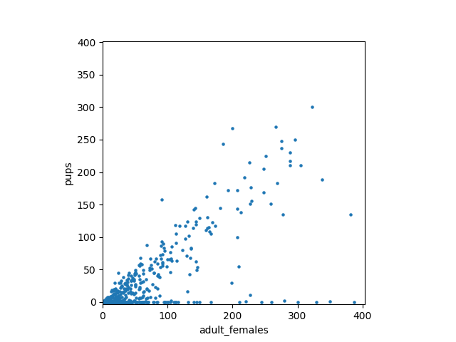
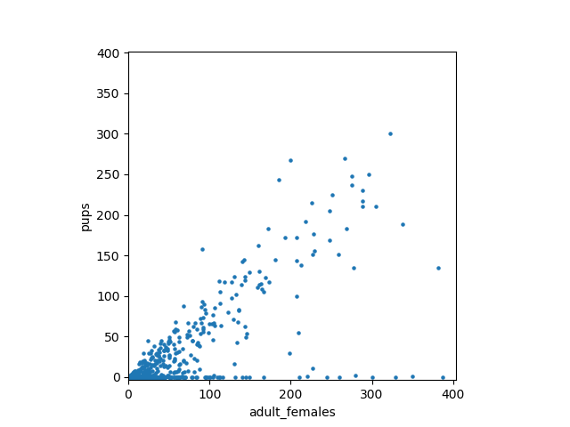

This page describes the NOAA Fisheries Steller Sea Lion Count Kaggle competition. Some of the images below are from the competition data set. According to my interpretation of the competition rules, I may use these pictures in this educational blog under fair use; if I'm wrong about this, please let me know!
Background
How many sea lions do you see sunbathing on the rock in the picture? Three hundred? Four hundred? What if I zoom in to a tiny region surrounding that puddle in the middle. That's a lot of sea lions! Each one is marked with a coloured dot: the adult males are marked red, and the adult females in brown. If you squint really hard, you'll also see lots of sea lion pups marked with green dots. And if you zoomed into other parts of the picture, you'd see sea lions marked with magenta dots (subadult males) and blue dots (juveniles) too. All together, there are 946 sea lions in the picture! This is way more than I guessed at first glance -- it's hard to count sea lions quickly and accurately by eye. Fortunately, the hard workers at NOAA spent days labelling thousands of pictures like this, which we can use to train an algorithm to count sea lions. To test our algorithm, we're also given thousands of unlabelled pictures. The goal of the Kaggle competition is to count how many of each type of sea lion is in each unlabelled picture. The most accurate predictions (using RMSE) is the winner.Choosing an algorithm
Today, almost all state-of-the-art image processing algorithms use CNNs -- convolutional neural networks. Unfortunately, CNNs can take weeks to train even using a powerful computing cluster. If you don't have the computing resources and patience to train a CNN from scratch, an alternative is to use a technique called transfer learning. In this context, the phrase transfer learning refers to the process of starting with a neural network that's been pre-trained on some task different from the one you're working on, then replacing the last layer with an untrained layer, then training the resulting network for your own task.
Why does transfer learning work? After all, we wouldn't take a half-trained random forest or SVM model, and continue its training on a new task -- what makes CNNs different? The answer lies in the organizational structure of a trained CNN. The early layers of a trained CNN detect low-level features (like edges or corners), while the later layers aggregate these low-level features to detect high-level features (like chimneys or airplane wings or sea lion flippers). This youtube video explains why and how this self-organization happens. Because the low-level feature detectors are roughly the same regardless of task (detecting the edge of a chimmney works the same way as detecting the edge of an airplane wing) we can save training time by initializing the early-layer weights in our network to ones that have already been trained to be good low-level feature detectors.
For this project, I re-trained the VGG16 network. Davi Frossard at University of Toronto has a well-written tensorflow implementation of VGG16 on his website, as well as a file containing pre-trained weights. There are two significant changes we need to make to Davi's VGG16 implementation to make it work with our problem: preparing the inputs and changing the output layer. Since we're talking about transfer learning, let's see how we'll modify the neural net output first.
Changing the output layer
The last few lines of Davi's implementation of VGG16 look roughly like the code below -- I've edited parts of the code fragment that aren't relevant to our high-level discussion (things like name_scope statements and datatype specifications). The abbreviations fc2 and fc3 stand for fully connected layers 2 and 3, respectively.fc2_weights = tf.Variable(tf.truncated_normal([4096, 4096], stddev=0.1)) fc2_biases = tf.Variable(tf.constant(1.0, shape=[4096])) fc2_logits = tf.nn.bias_add(tf.matmul(fc1_out, fc2_weights), fc2_biases) fc2_out = tf.nn.relu(fc2_logits) fc3_weights = tf.Variable(tf.truncated_normal([4096, 1000], stddev=0.1)) fc3_biases = tf.Variable(tf.constant(1.0, shape=[1000])) fc3_logits = tf.nn.bias_add(tf.matmul(fc2_out, fc3_weights), fc3_biases)
fc2_weights = tf.Variable(tf.truncated_normal([4096, 4096], stddev=0.1)) fc2_biases = tf.Variable(tf.constant(1.0, shape=[4096])) fc2_logits = tf.nn.bias_add(tf.matmul(fc1_out, fc2_weights), fc2_biases) fc2_out = tf.nn.relu(fc2_logits) fc3_weights = tf.Variable(tf.truncated_normal([4096, 5], stddev=0.1)) fc3_biases = tf.Variable(tf.constant(1.0, shape=[5])) fc3_out = tf.nn.bias_add(tf.matmul(fc2_out, fc3_weights), fc3_biases)
Preparing the inputs
The VGG16 network is designed to input pictures of size 224x224. The sea lion pictures are 5616x3744. I tried rescaling the sea lion pictures to be 224x224, but such a dramatic size reduction made it impossible to tell the sea lion pups apart from grey rocks. Instead of rescaling the sea lion pictures, I decided to use a sliding window approach. This means that every time we want to process a picture, we start inputting the top 224x224 pixel subimage into the neural net. After counting the sea lions in that single subimage, we process the next 224x224 pixel subimage. The result of this process looks like the following:Challenges
When I tested the neural network on the training set, some of my predictions were way different from the truth. I made a list of the problematic images, and watched my sliding window algorithm process them. To my surprise, it seemed like it was working appropriately. So I went back to the dotted training data to see if anything was fishy. Sure enough, there seemed to be a lot of unmarked sea lions in these difficult training images. For example, here's a portion of one of the pictures. Notice how none of the dark blobs (which sure look like sea lion pups!) are counted by the NOAA scientists. I went to the Kaggle forum and saw that other competition participants identified the problem: these dark blobs are seals, not sea lions. I needed a way to make sure my algorithm doesn't misidentify seals as sea lions. The typical solution to this problem would be to include into my training set a lot of pictures of seals and a lot of pictures of sea lions, so that my neural net would learn the subtle difference between them. This would take a lot of time and computing power, so I looked to simpler solutions first.
In all of the pictures with seals, my neural net was overestimating the number of sea lion pups -- after all, the seals were being misclassified as pups. One remarkable property of the dataset that I learned when I was exploring the data is that in any given picture, the sea lions pups (almost) never outnumber the adult females.

One of the remarkable property of the pictures with seals is that my algorithm predicted a lot of pups in the picture. After all, the seals were being misclassified as pups.
I went to the Kaggle forum and saw that other competition participants identified the problem: these dark blobs are seals, not sea lions. I needed a way to make sure my algorithm doesn't misidentify seals as sea lions. The typical solution to this problem would be to include into my training set a lot of pictures of seals and a lot of pictures of sea lions, so that my neural net would learn the subtle difference between them. This would take a lot of time and computing power, so I looked to simpler solutions first.
In all of the pictures with seals, my neural net was overestimating the number of sea lion pups -- after all, the seals were being misclassified as pups. One remarkable property of the dataset that I learned when I was exploring the data is that in any given picture, the sea lions pups (almost) never outnumber the adult females.

One of the remarkable property of the pictures with seals is that my algorithm predicted a lot of pups in the picture. After all, the seals were being misclassified as pups.